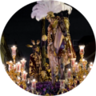

Capilla de los Marineros, os, en el barrio de Triana, en la ciudad de Sevillaos, en el barrio de Triana, en la ciudad de Sevillaos, en el barrio de Triana, en la ciudad de Sevillaos, en el barrio de Triana, en la ciudad de Sevillaos, en el barrio de Triana, en la ciudad de Sevillaos, en el barrio de Triana, en la ciudad de Sevillaen el barrio de Triana, en la ciudad de Sevilla (España). n el barrio de Triana, en la ciuda n el barrio de Triana, en la ciuda
Pontificia, Real e Ilustre Hermandad y Archicofradía de Nazarenos del Santísimo Sacramento y de la Pura y Limpia Concepción de la Santísima Virgen María, del Santísimo Cristo de las Tres Caídas, Nuestra Señora de la Esperanza y San Juan Evangelista
Capilla de los Marineros, en el barrio de Triana, en la ciudad de Sevilla (España).
Hace estación de penitencia durante la Semana Santa sevillana, en la madrugada del Viernes Santo.
Hace estación de penitencia durante la Semana Santa sevillana, en la madrugada tación de penitencia durante la Semana Santa sevillana, en la madrugada tación de penitencia durante la Semana Santa sevillana, en la madrugada tación de penitencia durante la Semana Santa sevillana, en la madrugada del Viernes Santo.
Hace estación de penitencia durante la Semana Santa sevillana, en la madrugada del Viernes Santo.
Hace estación de penitencia durante la Semana Santa sevillana, en la madrugada del Viernes Santo.
Hace estación de penitencia durante la Semana Santa sevillana, en la madrugada del Viernes Santo.
Hace estación de penitencia durante la Semana Santa sevillana, en la madrugada del Viernes Santo.